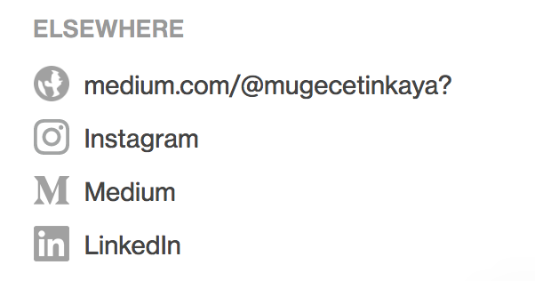

The course content is organized in three units:

Unit 1 - Exploring data: This unit focuses on data visualiation and data wranling. Specifically we cover fundamentals of data and data visualization, confounding variables, and Simpson’s paradox as well as the concept of tidy data, data import, data cleaning, and data curation. We end the unit with web scraping and introduce the idea of iteration in preparation for the next unit. Also in this unit students are introduced to the toolkit: R, RStudio, R Markdown, Git, GitHub, etc.
Unit 2 - Making rigorous conclusions: In this part we introduce modeling and statistical inference for making data based conclusions. We discuss building, interpreting, and selecting models, visualizing interaction effects, and prediction and model validity. Statistical inference is introduced from a simulation based perspective, and the Central Limit Theorem is discussed very briefly to lay the foundation for future coursework in statistics.
Unit 3 - Looking forward: In the last unit we present a series of modules such as interactive reporting and visualizaiton with Shiny, text analysis, and Bayesian inference. These are independent modules that instructors can choose to include in their introductory data science curriculum depending on how much time they have left in the semester.
The table below outlines a sample course schedule developed for a 15-week long semester course that meets twice a week for lecture and once a week for a computing lab.
| Session | Topic |
|---|---|
| 1 | Welcome to Data Science |
| UNIT 1 | EXPLORING DATA |
| 2 | Meet the toolkit |
| 3 | Data and visualization |
| 4 | Tidy data and data wrangling |
| 5 | Tips for effective data visualization |
| 6 | Merge conflict+ Tips for effective data visualization in R |
| 7 | Confounding variables and Simpson’s paradox |
| 8 | Coding style + Data types + Recoding variables |
| 9 | Review + recap |
| 10 | Web scraping |
| 11 | Functions and automation |
| UNIT 2 | MAKING RIGOROUS CONCLUSIONS |
| 12 | The language of models |
| 13 | Formalizing linear models |
| 14 | Work on project proposals |
| 15 | Modeling nonlinear relations + Introducing multiple predictors |
| 16 | Multiple linear regression + Model selection |
| 17 | Prediction and model validation |
| 18 | Estimation via bootstrapping |
| 19 | Hypothesis testing via simulation methods |
| 20 | Review + recap |
| 21 | Central limit theorem |
| 22 | Inference for regression |
| 23 | Inference overview |
| UNIT 3 | LOOKING FORWARD |
| 24 | Text analysis |
| 25 | Interactive data visualization and reporting with dashboards |
| 26 | Interactive data visualization and reporting with Shiny |
| 27 | Bayesian inference |
| 28 | Final project presentations |